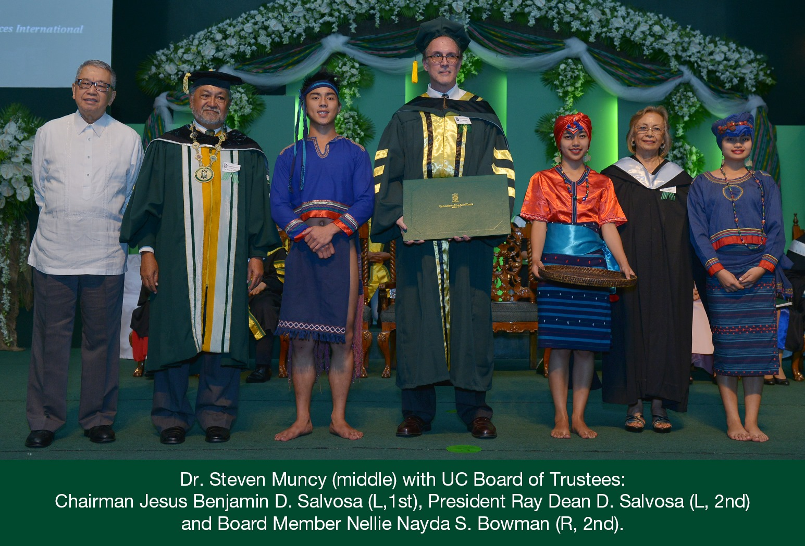

Dr. Steven Muncy
Founder and Executive Director
Community and Family Services International
Dr. Steven Muncy, Founder and Executive Director of Community and Family Services International (CFSI), is the 2021 Ramon Magsaysay Awardee for Southeast Asia to honor his dedicated and unselfish years of passionate service to the marginalized people in the region as well as his commitment to peacebuilding.
He has done remarkable efforts in humanitarian work which paved the way for the upliftment of the lives of thousands of disadvantaged people setting the foundation for a better future for children, families, and the common man.
He is a defining symbol of the triumph of will, of vision, and of heart for bringing out transformation across Asia and the Pacific Region.
Dr. Steven Muncy obtained his Bachelor of Social Work Degree, Magna Cum Laude from James Madison University in Virginia and proceeded to acquire his Master of Social Work Degree from the Catholic University of America in Washington, D.C..
Interestingly, one of the peacebuilding programs that he set up in the Philippines was a unique collaborative education program with his alma mater, the Catholic University of America, wherein 100 social workers, many of them Muslims, were housed and trained in his Center for Excellence in Humanitarian Service that he established in Cotabato. These social-work students were taught and trained by American Professors from the Catholic University of America who came in two-week stints and taught courses in conflict resolution etc. In the end, his students received Masters’ Degree in Social Work from the Catholic University of America. A unique contribution of the program was that it enhanced the skills and knowledge of the American Professors because this time, they were teaching Conflict Resolution Courses in a conflict area. Dr. Steve Muncy replicated this program in collaboration with other universities in Vietnam, Myanmar, and Indonesia, where over 200 Social Workers earned their Masters’ Degree in Social Work.
Eventually, Dr. Steve Muncy obtained his Master of Public Health and consequently, his Doctor of Public Health at the University of the Philippines- Manila.
His service to the Philippines began in 1980 when he served as the Programme officer for the United States Refugee Programme- Philippine Refugee Processing Center as a volunteer social worker tending to refugees from Cambodia who survived the genocide. Soon, he helped refugees from Vietnam and Laos who sought shelter in the country.
What was supposed to be a two-year voluntary service became 37 years and counting. He became a resident of the Philippines and fortified his work in promoting human security, humanitarian action, social work education, and good governance by founding the CFSI.
CFSI is a humanitarian organization committed to “vigorously protecting and promoting human security – specifically the lives and well-being, and dignity of people uprooted by persecution, armed conflict, disasters, and other exceptionally difficult circumstances.” populations of primary concern including refugees, internally displaced persons, stateless persons, and other disadvantaged, vulnerable persons.
In the process, because he was married to his work, he adopted two homeless Filipino children and has raised them as his own. One of them now works for CFSI in Cotabato.
As the Executive Director, he has led the conceptualization, design, and leadership of social development projects in several countries that were focused on peacebuilding and the enhancement of social protection for the disadvantaged populations. He represented CFSI in the Philippines Humanitarian Country team as well as in a variety of coordination bodies, processes, and work streams both at the national and international levels.
In addition, for the last 35 years as the Executive Director of CFSI, he helped raise and negotiate more than Php 2,690,936,658 (USD 63,775,600) for the organization’s operations.
His governance experience includes being the Founding Member of the National Nomination Committee for the Philippines, The Equity Initiative since January 2017; International Advisor of the Refugee Studies Centre or the University of Oxford in Great Britain since 2015; Member of the Advisory Council of the Consuelo Foundation – Philippine Branch from 2011 to 2015; Member of the Board of the International Council of Voluntary Agencies in Geneva, Switzerland; and Member of Board of Trustees of the Association of Foundations for 2010 to 2012.
Dr. Steven Muncy is also the author and co-author of international publications on various social issues such as child poverty and rebuilding communities displaced by armed conflicts.